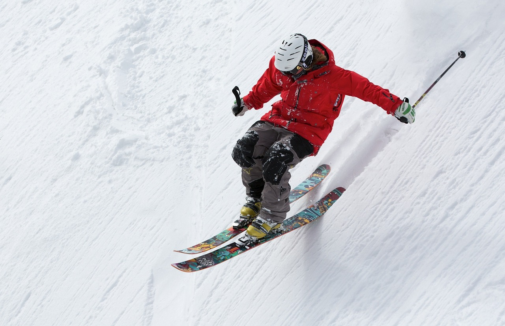

Unleash Your Adventurous Spirit: Must-Try Thrills in New Zealand!
Hiking in New Zealand
Some of the most breathtaking hiking routes in the world can be found in New Zealand, a country known for its varied landscapes that include pristine coasts and untamed highlands. The country of the long white cloud offers hiking experiences for all types of hikers, from breathtaking day climbs to challenging multi-day expeditions. All the information you require to go hiking in New Zealand is provided here:
Tongariro Alpine Crossing:

Description of the Trail: One of the most well-known day treks in New Zealand is the Tongariro Alpine Crossing, which winds through volcanic terrain and offers breathtaking vistas of emerald lakes and Mount Ngauruhoe, often known as Mount Doom from "The Lord of the Rings". The trail's 19.4 kilometers wind through a variety of landscapes, such as alpine meadows, steam vents, and volcanic craters.
Difficulty: Intermediate to advanced in difficulty. The trail features exposed stretches above the treeline where weather can change quickly, along with steep ascents and descents.
Highlights: The striking turquoise waters of the Emerald Lakes, the lunar-like landscapes of the South Crater, and the expansive views from the peak of Red Crater should not be missed.
Abel Tasman Coast Track:

Trail Description: Known for its golden beaches, blue oceans, and verdant native forests, the Abel Tasman Coast Track is a breathtaking coastal trek. The 60-kilometer trail can be finished in three to five days, however shorter day treks and multi-day excursions are also possible.
Difficulty: Moderately easy to difficult. Because of its good maintenance and fairly level terrain, hikers of all ages and fitness levels can enjoy this walk.
Highlights: Along the walk, discover hidden bays, tidal estuaries, and habitats for native wildlife. Look out for native birds including bellbirds and tui, as well as fur seals and dolphins.
Milford Track:

Description of the Trail: The Milford Track is widely regarded as the "finest walk in the world" because of its breathtaking scenery and unmatched beauty. This 53.5-kilometer route winds through natural rainforests, valleys filled with glaciers, and towering peaks before arriving at the magnificent Milford Sound.
Difficulty: Intermediate in difficulty. Although the trail is well-maintained and constructed, hikers should be ready for erratic weather and difficult terrain, which includes sharp ascents and descents.
Highlights: Take in the breathtaking views of Milford Sound, a UNESCO World Heritage Site, Mackinnon Pass, and Sutherland Falls, one of the world's tallest waterfalls.
Routeburn Track:

Trail Description: The Routeburn Track is a well-known mountain journey that winds across the Southern Alps, providing stunning vistas of untainted alpine lakes, glacier-carved valleys, and craggy rocks. With the option of side treks and overnight stays in wilderness cabins, the 32-kilometer trail may be finished in two to four days.
Difficulty: Intermediate in difficulty. There are several exposed areas above the treeline on the trail where hikers may experience snow or strong winds, along with some steep ascents and descents.
Highlights: Highlights include hiking through old beech forests, swing bridge crossings over roaring rivers, and ascents to expansive peaks like Key Summit that offer expansive views of the nearby mountains and valleys.
Essential Tips for Hiking in New Zealand:
- Be Prepared: Before leaving, research the weather and trail conditions. Also, make sure you have the right gear, including food, water, clothing, navigational aids, and emergency supplies.
- Respect Nature: Honor the environment by adhering to established routes, removing any signs of your visit, and showing consideration for local species and cultural places. To lessen your impact on the environment, abide by the "Leave No Trace" philosophy.
- Safety First: Prioritizing safety Carry a communication device in case of emergency and let someone know your route and anticipated return time. Recognize your limitations as a hiker and be mindful of potential dangers like river crossings, avalanches, and shifting weather.
Resources for Hiking in New Zealand:
- Department of Conservation (DOC): This organization oversees the national parks and conservation areas in New Zealand and offers details on hiking routes, hut reservations, and safety precautions.
- New Zealand Tramper: New Zealand Tramper is an online hiking community with forums for experience and guidance exchange, trip reports, and trail descriptions.
- Great Walks of New Zealand: Visit the official Great Walks website for comprehensive information on each trail, how to book, and alternatives for guided tours.
Shredding the Slopes: Skiing in New Zealand

Some of the greatest skiing and snowboarding experiences in the Southern Hemisphere can be found in New Zealand, with its snow-capped peaks and immaculate alpine scenery. World-class ski resorts, beautiful backcountry landscapes, and an extended winter season draw visitors from all over the world to New Zealand. All the information you require to go skiing in New Zealand is provided here:
Queenstown Ski Resorts:
Location: South Island's Queenstown.
Ski Resorts: Coronet Peak and The Remarkables, two of Queenstown's most popular ski resorts, provide superb skiing and snowboarding among breathtaking alpine scenery.
Coronet Peak: Popular with families and novices alike, Coronet Peak boasts expansive courses, night skiing, and cutting-edge amenities.
The Remarkables: The Remarkables is a haven for intermediate and expert skiers, known for its steep chutes, natural terrain parks, and stunning vistas of Lake Wakatipu.
Wanaka Ski Fields:
Location: South Island's Wanaka.
Ski Fields: Wanaka is home to two significant ski areas, Treble Cone and Cardrona Alpine Resort, each of which provides different terrain and experiences for snowboarders and skiers.
Cardrona Alpine Resort: This family-friendly resort offers wide-open slopes, top-notch terrain parks, and a welcoming environment for riders of all ability levels.
Treble Cone: Renowned for its off-piste terrain, steep slopes, and breathtaking vistas of Mount Aspiring National Park and Lake Wanaka, Treble Cone presents a formidable experience for expert skiers and snowboarders.
Mount Hutt Ski Area:
Location: South Island, close to Christchurch.
Ski Area: With its vast terrain, consistent snowfall, and breathtaking vistas of the Southern Alps, Mount Hutt is one of the biggest and most well-liked ski slopes in New Zealand.
Terrain: Mount Hutt offers skiers and snowboarders of all skill levels everything from well-groomed routes and expansive bowls to strenuous chutes and natural terrain parks.
Facilities: Mount Hutt has up-to-date amenities such as child and novice ski school programs, ski lifts, equipment rentals, and on-mountain food options.
Other Ski Areas:
Cardrona Backcountry: Take advantage of helicopter access and guided trips to explore unexplored powder fields and alpine terrain while enjoying the exhilaration of backcountry skiing and snowboarding in the Cardrona Valley.
Craigieburn Valley: For daring skiers and snowboarders, Craigieburn Valley, in the Canterbury region of the South Island, provides steep terrain, deep powder snow, and a distinctive club field environment.
Turoa and Whakapapa: The main ski areas in New Zealand are Turoa and Whakapapa, which are situated atop Mount Ruapehu in the North Island. They provide a variety of terrain, volcanic scenery, and breathtaking views of Tongariro National Park.
Essential Tips for Skiing in New Zealand:
- Verify Conditions: Before hitting the slopes, keep an eye on the snowpack, the avalanche danger, and weather predictions. Be ready for shifting terrain and unpredictable weather.
- Ski Safety: Wear the proper equipment, such as helmets and avalanche transceivers in backcountry terrain, and follow route signs while staying within your skill level.
- Transportation: Arrange in advance for any required equipment rentals, ski passes, lodging, and transportation to and from the ski slopes.
- Après-Ski: Indulge in après-ski pursuits including spa treatments, hot springs, and dining at neighborhood pubs and restaurants after a day of skiing.
Resources for Skiing in New Zealand:
- Ski New Zealand: To help you plan your ski vacation, the official Ski New Zealand website offers details on ski resorts, snow conditions, ski packages, and travel advice.
- New Zealand Avalanche Advisory: Before venturing into backcountry territory, review the most recent avalanche forecasts and safety alerts from the New Zealand Avalanche Advisory.
- Snow Forecast: Snow Forecast offers comprehensive forecasts for ski resorts throughout New Zealand, so you can stay informed about snowfall amounts and weather conditions.
Taking the Plunge: Bungee Jumping in New Zealand

Known as the home of commercial bungee jumping, New Zealand has some of the most famous and exhilarating bungee jumping experiences worldwide. With breathtaking natural scenery serving as your backdrop, you can brave the ultimate leap of faith and feel the excitement of falling free into an abyss. All the information you require regarding bungee jumping in New Zealand is provided here:
Kawarau Bridge Bungy:
Location: South Island's Queenstown.
Description: At the world's first commercial bungee jumping site, the Kawarau Bridge Bungy offers thrill-seekers the opportunity to leap from a historic suspension bridge that spans the Kawarau River.
Jump Experience: Experience the thrill of a 43-meter (141-foot) free fall into the azure Kawarau River. You can choose to dip your feet or reach out and touch the water.
History: AJ Hackett and Henry van Asch founded the Kawarau Bridge Bungy in 1988, and since then, it has grown to become a well-known Queenstown landmark, luring tourists from all over the world to experience the exhilaration of bungee jumping at its original location.
Nevis Bungy:
Location: On South Island, close to Queenstown.
Description: One of New Zealand's highest bungee leaps, the Nevis Bungy offers a thrilling free fall from a platform 134 meters (440 feet) over the Nevis River canyon.
Experience the Jump: Leap into the chasm and feel the rush of 8.5 seconds of pure adrenaline as you plummet toward the rough canyon floor below, encircled by breathtaking views of the mountains.
Thrill Factor: For thrill-seekers visiting Queenstown, the Nevis Bungy is a must-do experience because of its breathtaking views and heart-pounding thrills.
Taupo Bungy:
Location: North Island's Taupo.
Description: At a height of 47 meters (154 feet), the Taupo Bungy provides a famous bungee jumping experience over the Waikato River. The platform is cantilevered above the river gorge.
Experience the Jump: Leap into the air and soar while taking in breathtaking views of the Waikato River valley below. The Taupo Bungy is renowned for its breathtaking scenery and heart-pounding excitement.
Location: Positioned minutes from Taupo's main center, the bungee site provides easy access and breathtaking views of the surrounding countryside.
Bridge to Nowhere Bungy:
Location: On North Island, close to Taupo.
Description: A unique bungee jumping experience from a historic bridge in the isolated Whanganui River valley is provided by the Bridge to Nowhere Bungy.
Experience the Jump: From the iconic Bridge to Nowhere, amidst untamed native vegetation and rough river landscape, take a bold leap of faith. In the middle of the forest, the bungee jump provides a feeling of adventure and seclusion.
Adventure Factor: For thrill-seekers wishing to mix bungee jumping with a breathtaking helicopter flight and jet boat ride across the secluded Whanganui River valley, the Bridge to Nowhere Bungy is the perfect option.
Essential Tips for Bungee Jumping:
- Safety first: To guarantee that jumpers have a thrilling and safe experience, New Zealand's bungee jumping operators follow stringent safety regulations and procedures. Pay attention to what the jump crew is saying, and abide by any safety precautions.
- Reservations: To guarantee your seat, especially during the busiest travel seasons, make your bungee jumping reservations in advance. For convenience, a lot of bungee jump companies have online reservation systems.
- Dress appropriately: Put on cozy attire and outdoor-appropriate closed-toe footwear. Steer clear of loose accessories or jewelry that can tangle during the jump.
- Images and Videos: With the expert photo and video packages that bungee operators offer, you can preserve the priceless moments from your thrilling adventure. Years to come, relive the rush and exhilaration of your jump.
Resources for Bungee Jumping:
- AJ Hackett Bungy: For more on bungee jump locations, costs, and reservations, go to the official website of AJ Hackett Bungy, the company that invented commercial bungee jumping.
- Queenstown Tourism: Visit Queenstown Tourism's official website to learn more about bungee jumping and other adventure activities in New Zealand's adventure capital.
- Taupo Tourism: For details on bungee jumping and other outdoor activities in the picturesque Lake Taupo region of the North Island, see the official Taupo Tourism website.
Soaring High: Skydiving in New Zealand
The breathtaking scenery of New Zealand makes for the ideal setting for an exciting skydiving adventure. New Zealand provides an incredible adrenaline rush and magnificent sights when skydiving amidst its huge stretches of untouched nature, rocky coasts, and majestic mountains. This is all the information you need to skydive in New Zealand, whether you're an expert or novice tandem jumper:

Fox Glacier Skydive:
Location: South Island's Fox Glacier.
Description: Take in the excitement of skydiving over the stunning West Coast scenery, which includes views of the Tasman Sea, Franz Josef Glacier, and the Southern Alps.
Altitude: You can jump up to 16,500 feet in the air, and you'll have around 75 seconds of free fall until your parachute opens.
Experience Level: Perfect for both seasoned skydivers seeking an exhilarating experience and first-time tandem jumpers.
Lake Taupo Skydive:
Location: North Island's Lake Taupo.
Description: Take in the breathtaking vistas of the surrounding volcanic plateau and snow-capped peaks as you skydive over Lake Taupo, the largest lake in New Zealand.
Altitude: You can jump up to 15,000 feet in the air, and you'll have up to 60 seconds of free fall until your parachute opens.
Experience Level: With tandem skydiving options and qualified instructors to help you through the experience, this sport is appropriate for both novices and experts.
Abel Tasman Skydive:
Location: South Island's Motueka Airport.
Description: Take in sweeping views of the surrounding mountains and coastline as you soar over the golden beaches and turquoise waters of Abel Tasman National Park.
Altitude: You can jump up to 16,500 feet in the air, and you'll have around 70 seconds of free fall until your parachute opens.
Experience Level: Perfect for novices, with tandem skydiving alternatives for those eager to feel the rush of skydiving for the first time.
Queenstown Skydive:
Location: South Island's Queenstown.
Description: Take in breathtaking views of Lake Wakatipu, the Remarkables mountain range, and the charming Queenstown skyline as you skydive over the adventure capital of New Zealand.
Altitude: You can jump up to 15,000 feet in the air, and you'll have up to 60 seconds of free fall until your parachute opens.
Experience Level: Professional instructors and tandem skydiving options offer a safe and exciting experience for both novice and expert skydivers.
Essential Tips for Skydiving:
- Safety first: To guarantee the safety of every jumper, skydiving operators in New Zealand follow stringent safety regulations and procedures. Pay attention to what your instructor says and abide by any safety precautions.
- Make reservations: To guarantee your seat, especially during the busiest travel seasons, reserve your skydiving adventure in advance. Online reservations are available for convenience from a lot of skydiving companies.
- Wear Proper Clothes: Wear closed-toe shoes with secure fastenings and comfortable apparel appropriate for outdoor activities. Steer clear of any loose jewellery or accessories that might fall loose during the jump.
- Photographs and Videos: With the expert picture and video packages that skydiving operators offer, you can preserve the priceless moments from your amazing experience. Years to come, relive the rush and exhilaration of your jump.
Resources for Skydiving:
- Skydive New Zealand: For more on skydiving destinations, costs, and reservations, go to Skydive New Zealand's official website.
- Queenstown Tourism: Visit the official Queenstown Tourism website to learn more about skydiving and other adventure sports in New Zealand's adventure capital.
- Lake Taupo Tourism: For details about skydiving and other outdoor activities in the picturesque Lake Taupo region of the North Island, see the official website of Lake Taupo Tourism.